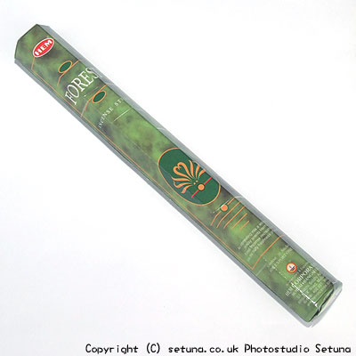

そのまま嗅ぐと、杉、ヒノキ、松といった樹の匂いです。
火を点けると製材所の近くを通りかかった時の匂いというか、ナラやブナと一緒に燃やした時の何ともいえない木の良い匂いがします。
これはこれで、私はとても好きなのですが「お香」としてはいまひとつ。部屋の中で焚く必要が果たしてあるのか・・・・?
そこで同社の「ヒーリング香」と一緒に焚く事をお勧めします。
「ヒーリング香」だけに比べ、華やかで甘さが増した爽やかな木の香りが、一気に部屋いっぱいに良い香りが広がります。
ヒーリング香自体が、人好きのするお香に属しますので、急な来客時などに備えて、2種を一緒に焚いておくと新築時のような爽やかな木の残り香が漂うので。おもてなしとしては好印象だと思います。
